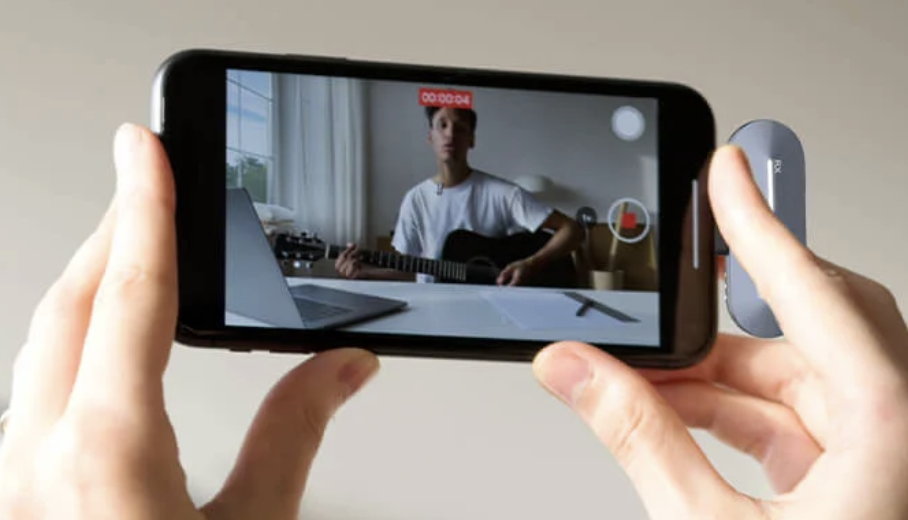

Novice Low · Lesson 2
Introducing Oneself and Others


Learning Objectives
Introduce oneself formally and informally.
Introduce others.
Use the forms of the verb to be: am, are, is.
Recognize and produce the diphthong /aɪ/ as in I, and the pronunciation of the possessive 's.
Activity 1
Listen and Pay Attention
Listen carefully and pay attention to how these words are said. Escucha con atención cómo se dicen estas palabras.
Activity 2
Listen and Practice
Listen and pay attention to how your mouth moves to say these words. Practice saying them out loud. Escucha y presta atención a cómo se mueve tu boca al decir estas palabras. Practica diciéndolas en voz alta.
Activity 3
Listen and Memorize
Listen, repeat, and memorize the words, phrases, or sentences. Pay attention to the images that represent them. Escucha, repite y memoriza las palabras, frases u oraciones. Presta atención a las imágenes que las representan.
Activity 4
Listen and Match
Listen carefully to the phrase, word, or sentence, and match it to the picture that represents it. Escucha con atención la frase, palabra u oración, y relaciónala con la imagen que la representa.
Activity 5
Practice with ChatGPT Voice
As you did in Lesson 1, go to ChatGPT voice and practice the target vocabulary from this lesson — introducing yourself and introducing others. Como hiciste en la Lección 1, ve a la voz de ChatGPT y practica el vocabulario de esta lección — presentarte a ti mismo y presentar a otras personas.
If you need a reminder of how to start a voice conversation with ChatGPT, revisit Activity 5 in Lesson 1. Si necesitas recordar cómo iniciar una conversación de voz con ChatGPT, revisa la Actividad 5 de la Lección 1.
Activity 6

Say It and Record
After practicing, record a close-up video of your mouth and face saying the words and phrases from this lesson, so your professor can see exactly how you shape your mouth to produce each sound. Email the video file to your professor. Después de practicar, graba un video de primer plano de tu boca y rostro diciendo las palabras y frases de esta lección, para que tu profesor pueda ver exactamente cómo formas tu boca al producir cada sonido. Envía el archivo de video por correo electrónico a tu profesor.
- Open your phone's camera app and switch it to video mode (not photo mode). Abre la aplicación de cámara de tu teléfono y cámbiala al modo de video (no al modo de foto).
- Hold the phone close enough that your mouth and face fill most of the frame in a clear close-up shot. Sostén el teléfono lo suficientemente cerca para que tu boca y rostro llenen la mayor parte del encuadre en una toma de primer plano clara.
- Record yourself saying the words and phrases from this lesson, speaking clearly and at a natural pace. Grábate diciendo las palabras y frases de esta lección, hablando con claridad y a un ritmo natural.
- Stop recording and save the video. Detén la grabación y guarda el video.
- Attach the video file to an email and send it to your professor. Adjunta el archivo de video a un correo electrónico y envíalo a tu profesor.
Video files are larger than audio files and may be too big to attach directly to an email. If your email won't let you attach the video, upload it to Google Drive (or a similar service) and share the link in your email instead. Los archivos de video son más grandes que los de audio y pueden ser demasiado pesados para adjuntar directamente a un correo. Si tu correo no te permite adjuntar el video, súbelo a Google Drive (o un servicio similar) y comparte el enlace en tu correo.
✉ dravellaneda07@gmail.comActivity 7
Listen and Pay Attention
Listen carefully and pay attention to how these words are said. Escucha con atención cómo se dicen estas palabras.
Activity 8
Listen and Practice
Listen and pay attention to how your mouth moves to say these words. Practice saying them out loud. Escucha y presta atención a cómo se mueve tu boca al decir estas palabras. Practica diciéndolas en voz alta.
Lesson activities coming next.
This lesson is still being built.